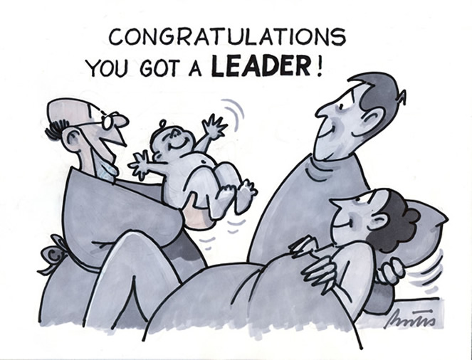
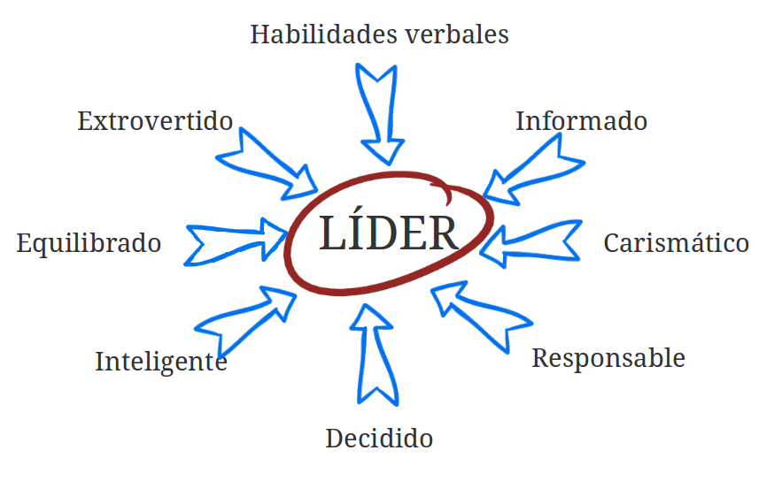

Un proceso de influencia social mediante el que las personas consiguen y movilizan la ayuda de otras para la consecución de metas colectivas. Chemers, 2001
¿Quién puede ser líder?
Desde el momento de su nacimiento algunas personas están marcadas para la servidumbre y otras para el mando. Aristóteles
Teoría rasgos

Rasgos Liderazgo

Teorías implícitas
Muchos miembros creen que sus líderes deben ser inteligentes, extrovertidos, masculinos, sensibles, dominantes, conservadores y equilibrados, de forma que esas serán las características que poseerán los líderes Lord et al. 1986
Teoría de la categorización del líder
El líder es el miembro del grupo que es considerado como más prototípico del mismo (en términos de la teoría de la autocategorización)